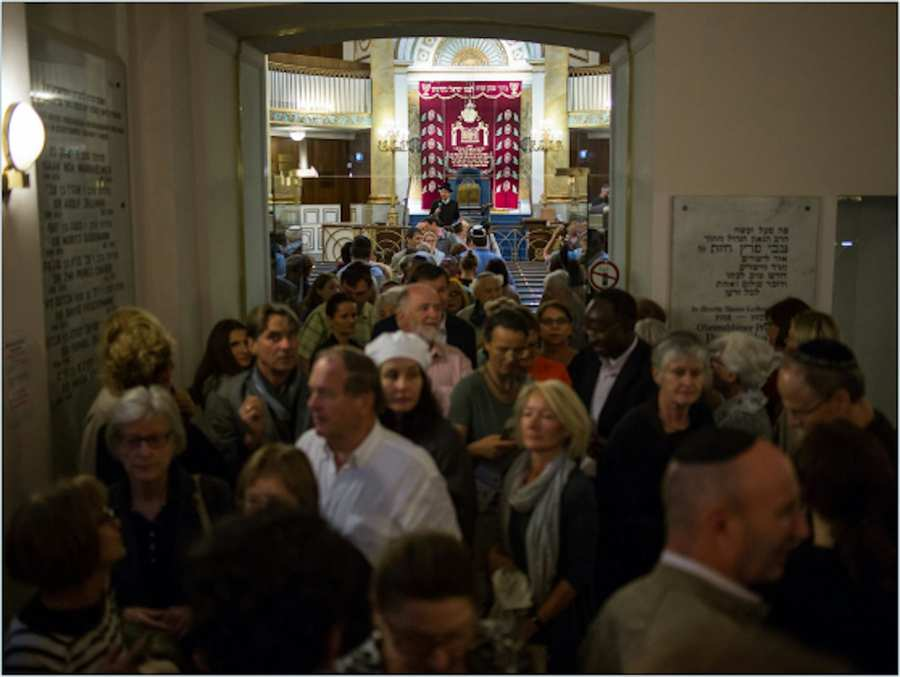

Membership Services
Membership Services is the central point of contact for members on any question: registering new members or people who used to be members of the Community in the past, issuing confirmations of registration, answering a range of verbal and written enquiries, helping to resolve all kinds of problems that members of the Community are experiencing, and collecting contributions.
We maintain the members' database and are therefore the central body which manages and must be notified of any changes (names, addresses, nationality, marital status, delivery of newspapers). If you want to report any changes, please contact our membership service.
Temple tickets for the High Holidays are available at Member Services.
Contribution to the Jewish Community of Vienna
The annual membership contribution is currently €240 or €20 per month.
The contribution is tax-deductible.
In Section 123 of the Bylaws, the Board of Directors decided on the following guidelines for charging reduced fees in certain admissible cases.
- Students up to the age of 24 pay €70 per year or €5,84 per month
- Unemployed spouses of paying members pay €120 per year or €10 per month
- Mothers and fathers on parental leave pay €120 per year or €10 per month
- Members whose income is below the minimum pension or minimum social security benefit or who are unemployed (registered with the Public Employment Service) pay €70 per year or €5,84 per month
Important Update:
Receive Your Annual Membership Contribution Letter Digitally
In order to meet the wishes of many of our members, reduce administrative effort, and contribute to environmental protection, the annual letters regarding the membership contribution can now be received as an email.
Please let us know via our website at www.ikg-wien.at/kultusbeitrag whether we may send you the assessment by email in the future.
If you would like to sign up to receive the letter as an email, you will need to provide us with:
- your current email address, and
- your EDV number, which can be found on your last Membership Contribution letter
Becoming a member of the Jewish Community of Vienna
Jews whose primary residence is in Vienna are warmly invited to register as members of IKG Vienna. Click on the link below to download the application form.
You will require the following documents to apply for membership
ADULTS
- One completed application form per person, signed by themselves/ their legal guardian
- Either a passport, ID card or driving licence
- Adress registration (ZMR)
- Birth certificate
- Documents confirming Halakhic Jewish identity. Preferably an Ishur Yahadut from a recognised Orthodox rabbi, confirming Jewish status
- Optional: Ketubah, confirmation of divorce from the Beit Din – Maase Beit Din
CHILDREN
- One completed application form per child, signed by the mother. The mother is required to be a member.
- Birth certificate
- Certificate of registration
Important notes: Documents can be submitted trough email, mail or in person. The originals must be available in case of further questions. Membership only takes effect once it has been confirmed by the Rabbinate of the IKG.
Avi Kihinashvili
Tel: +43/1/531 04-170
a.kihinashvili [at] ikg-wien.at
service [at] ikg-wien.at
Daniela Maurer
Tel: +43/1/531 04 – 190
d.maurer [at] ikg-wien.at
OPENING HOURS
Please make an appointment in advance.
Monday to Thursday: 9 a.m. to 4.30 p.m.
Friday: 9 a.m. to 1 p.m.
Regarding grave restorations and grave reservations please contact:
Mag.ª Bettina Kolter
Tel: +43/1/531 04 – 180
b.kolter [at] ikg-wien.at